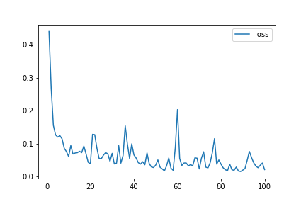

Neural Network (TensorFlow)
The Neural Network is a series of algorithms that endeavors to recognize underlying relationships in a set of data through a process that mimics the way the human brain operates.
The Neural Network Model used TensorFlow and Keras Tuner and came out with the following results
Training Data Score : NA% - Testing Data Score : 97.7%
True Positive : NA , False Positive : NA , False Negative : .65% , True Negative : NA
Our last attempt was to see how well a neural network would handle the problem. Here the idea was to create a model function that would go through as many hyperparameters as possible to find a best fit. We found that in the metrics used in the feedback that there is a method for training against reducing false negatives and so included that along with the accuracy. To speed things up we set up an early-stop callback to trigger ending a test if there is no improvement in 5 iterations. This was needed as this took the longest of all our models to run. We then created our final model based off of loading in the best parameters. This resulted in the best performance of all the models we explored. We consistently got results at 97% or better (usually 98%-99%), but most crucially we got zero false negatives. Even running several times to account for the stochastic nature of the models, we always got zero false negatives.
